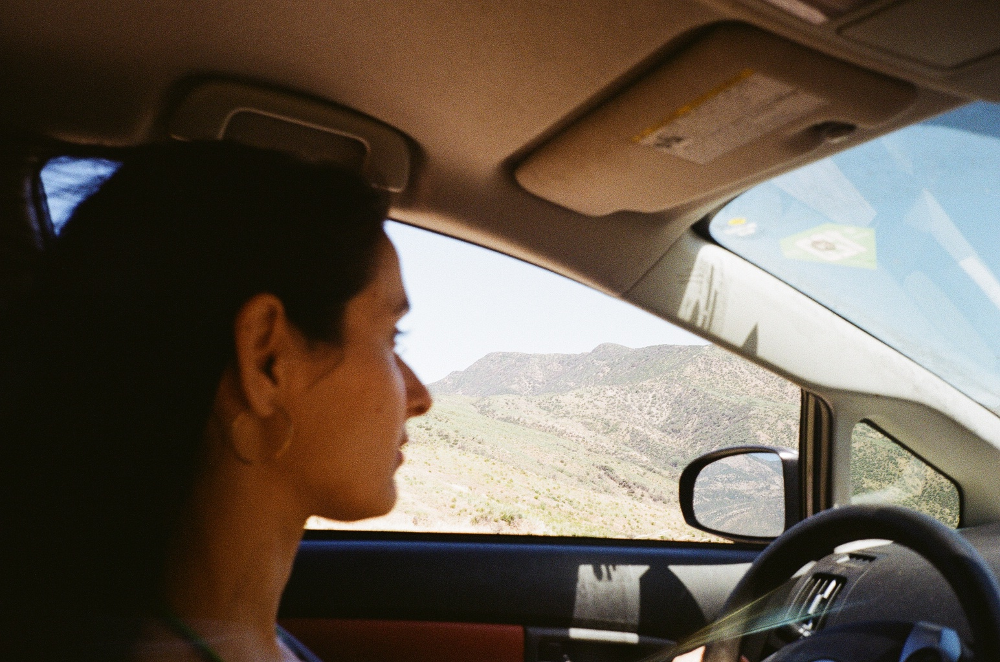

Every evening Ojai experiences a "Pink Moment."
For one moment, the entire valley lights up in a magical pink.
The length of a moment is not really defined. I am pretty sure I missed it despite staring.
Because of this failure I can't really give this claim first-hand.
So please do not go searching for an Ojai pink moment due to this account alone.
But consider a pink moment divorced from the stars.
When your glasses catch a tint of rose, your eyes roll out of your head and you perceive a moment of warmth with unprecedented clarity.
The moment floating on the surf when you perceive God's bounty.
The moment on a couch surrounded by friends when love threatens to overpower you and you let it.
Well, in a Los Feliz apartment outside Hollywood I leafed through LPs under the soft pink & green glow of LEDs.
Car Seat Headrest, Kurt Vile, The Cars, Cosmopolitanism, Free Love, California.
How the fuck am I so lucky in this world to be lying on the carpet in a decadent rent-controlled living room spinning the wax of the cutie I met on a desert dancefloor in Arizona last month.
